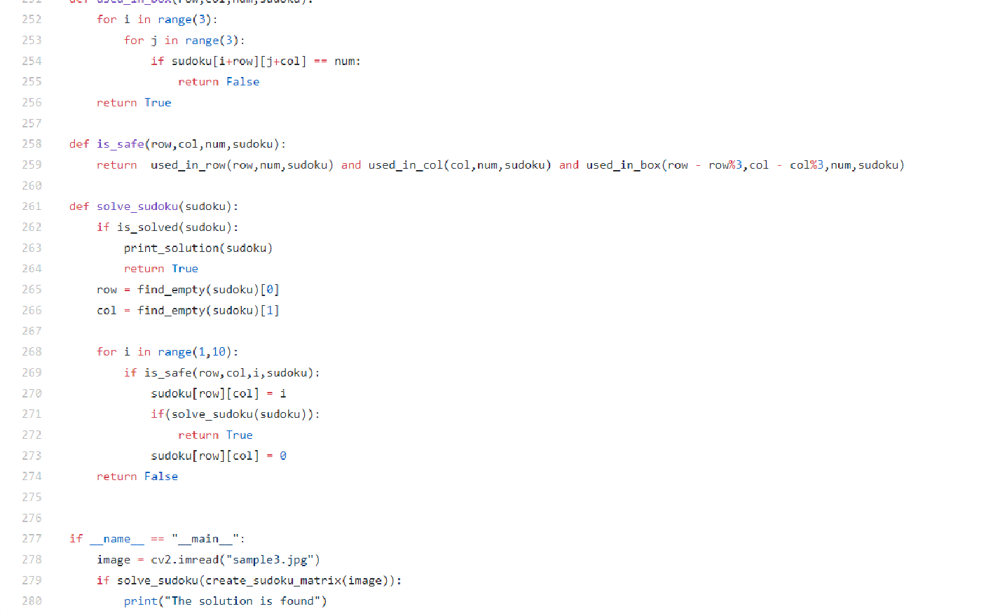

Sudoku Solver

Image Processing is a very interesting topic to work on. Anybody working towards machine learning would have worked in the field of image processing. So what I tried to build was a sudoku solver application which would take the image of the sudoku puzzle and give you the solution.
Sudoku is an interesting puzzle, it is a 9x9 square with 81 cells, subdivided into 9, 3x3 boxes, the aim is to fill every cell with a number from 1-9 such that each row, each column and each sub division has all the number from one to nine. Or can it also be told as any number appeared in a cell cannot appear in the same row, same column and same subdivision.

Approach
If this was a normal problem solving question, we would have used the backtrack algorithm, which calls itself recursively until the puzzle is solved. The base condition is to check if we can still enter numbers into the sudoku matrix, and iterate through numbers from 1-9 and if it is safe put that number in a cell I.e. the same number doesn’t exist in the same row same column and same subdivision, update that number in the matrix, and call the sudoku_solve function again. Refer the code in the GitHub link attached below for more better understanding.
The above case handled solving the sudoku if it was in the form of a matrix, now the question is how do we generate the matrix from an image of the sudoku.
My idea was to isolate the sudoku square and flatten it out, then resize the flattened image of the puzzle to 900x900 for uniformity and converted the image to grayscale to maintain simplicity. Then I created my ROI as a 100x100 square which is the size of each cell and iterate through the whole image. This would give us the data present in each of the cell. If my region of interest has some amount of black pixels in it, means that the cells contains a number and is not an empty one.
def create_sudoku_matrix(image2):
clf = svm.LinearSVC()
training_classifier(clf,"data\\")
sudoku = [[0 for i in range(9)]for j in range(9)]
iterX = 0
iterY = 0
image = image2.copy()
pts = image_checker(image)
#pts is a 3D array of size(4,1,2) we reshape it into (4,2)
pts = pts.reshape(4,2)
#creating a temporary array of zeros to store the coordinates in order
rect = np.zeros((4,2), dtype='float32')
#storing the sum along the rows and difference across each row
s = pts.sum(axis=1)
diff = np.diff(pts, axis=1)
#the minimum sum value is the top left point and maximum sum value is the
#bottom right point, similarl the minimum difference will the the top right
#point and maximum difference is the bottom left point
rect[0] = pts[np.argmin(s)]
rect[2] = pts[np.argmax(s)]
rect[1] = pts[np.argmin(diff)]
rect[3] = pts[np.argmax(diff)]
#unpacking the array
(tl,tr,br,bl) = rect
#finding the width and height of the sudoku puzzle in the image
#using the coordinates obtained using the formula
#length = sqrt((x2 - x1)^2 + (y2 - y1)^2)
widthA = np.sqrt(((br[0] - bl[0]) ** 2) + ((br[1] - bl[1]) ** 2))
widthB = np.sqrt(((tr[0] - tl[0]) ** 2) + ((tr[1] - tl[1]) ** 2))
heightA = np.sqrt(((bl[0] - tl[0]) ** 2) + ((bl[1] - tl[1]) ** 2))
heightB = np.sqrt(((br[0] - tr[0]) ** 2) + ((br[1] - tr[1]) ** 2))
#getting the maximum values of the final dimensions of the puzzle
maxwidth = max(int(widthA),int(widthB))
maxheight = max(int(heightA),int(heightB))
#construct our destinatio points which wil be used to map the screen to
#to-down, "brid eye" view
dst = np.array([
[0,0],
[maxwidth - 1, 0],
[maxwidth - 1, maxheight - 1],
[0, maxheight - 1]], dtype='float32')
#calculate the perspective transform matrix and warp the perspective to grab
#the screen
M = cv2.getPerspectiveTransform(rect,dst)
warp = cv2.warpPerspective(image,M,(maxwidth,maxheight))
#resizing the image into 630x630 image
res = cv2.resize(warp,(630,630),interpolation=cv2.INTER_AREA)
#cv2.imshow("sudoku",res)
#cv2.waitKey(0)
"""
according to the image generated and stored in res, the size of the puzzle
is 630x630, which imples that each cell of the sudoku is 70x70 as it is as
square image
we interate through rows and columns of the entire sudoku and if we find a
number in that cell we predict the number using the svm classifier and
store it in a 2D list
"""
for i in range(0,561,70):
for j in range(0,561,70):
#creating our ROI
roi = res[i:i+70,j:j+70]
#process the image and using countnonzero() we check if the cell
#has a number or not
grey = cv2.cvtColor(roi,cv2.COLOR_BGR2GRAY)
_,thresh = cv2.threshold(grey,80,255,cv2.THRESH_BINARY)
crop_width = 10
cropped = thresh[crop_width:70-crop_width,crop_width:70-crop_width]
if int(cv2.countNonZero(cropped)) < 2400:
test = cropped.copy()
test = cv2.resize(test,(50,50),interpolation=cv2.INTER_AREA)
test = test.reshape(1,2500)
prediction = int(*clf.predict(test))
cv2.imshow("block",test.reshape(50,50))
print(clf.predict(test))
#print(clf.predict(thre))
cv2.waitKey(0)
sudoku[iterX%9][iterY%9] = prediction
iterY += 1
iterX += 1
return sudoku
In the near future, I plan to use the MNSIT dataset to to create my classifier using CNN which would make it more efficient.
The code for the entire application is there in the following GitHub link. Click here for complete code